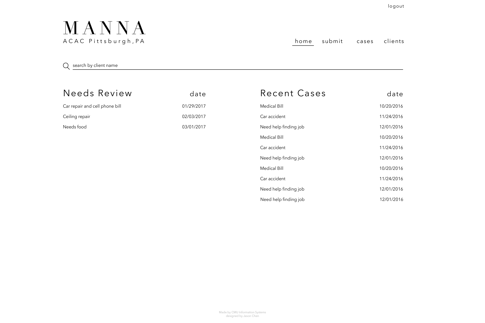

Manna was a project done in conjunction with Professor Heimann from CMU. This project was done as an independent study with the guidance of my professor, and it was mostly a solo project on my end. From start to finish, I was responsible for the development of the web application Prof H identified a problem within his Church, ACAC Pittsburgh, and tasked me to do create an application that would simplify the process of countless email threads and attachments to a system where Deacons of the church could open cases to provide aid for someone and attach relevant documents so that other Deacons could vote and discuss.
Project Requirements:
The first few days of the project were to create the database needed for this application, so I made an ERD and created a developmental database on SQL lite for the purposes of this project. Key tables were that there had to be users, which were the deacons, and each deacon could create cases online. Each case would have document(s) that could be attached and each case would have a vote count. Overall, it was a pretty simple application, an dover the period of 4 months, I worked on it for about 5-6 hours each week.
From there, I started designing the UI for the application. Overall, it was quite simple, and I based my designs on something a little more minimal from something like UDFORE. I primarily started my designs from a mobile screen, as the focus was to make sure the mobile experience was worthwhile. When the mobile screens were done, I simply just “enlarged” the sections to fit a webpage. I tried to keep the designs simple since I wanted to just make sure that it was functional yet it could easily resize and be responsive towards all screens.
One thing I struggled with when designing was the Nav bar itself. I wanted the logo to be centered with buttons under it on mobile, but on computer screens, I wanted them to be separate so that it would take up space and act as a long nav bar. For the sake of time, I did not want to deal with collapsing the nav bar buttons into a hamburger bar, and since there were only a few actions, it felt okay to keep the buttons the same size for mobile and for web.
A big ask was that whenever a case was created, there needed to be a comments or discussion section as well as a voting portion. The basis for this application was so that deacons could not only create cases for people, but also vote and discuss about them so that they did not have to meet up in person. In order to further cut down implementation time, I leveraged Disqus’ platform, as they had a package built for Ruby on Rails. With that, I was able to attach a thread to each case, but not have to worry about managing and adding more to the database design, as well as creating a whole content system that involves with editing, replying to, etc.
When it came down to the voting, I had to focus on two parts: making sure that each user can only vote once but can change their vote if needed, and disable voting for closed cases. The voting itself was quite easy as it was just incrementing an integer tied to a case for both Yes and No votes. I built it so that the user would only have one vote, and if they change their vote, it would remove the previous vote and add the new vote to the respective category. If i were to do this again, I think I would at least make it more obvious to the user that this is happening. Voting was a small modal that popped up to allow the user to just click either yes or no, and the voting section would update itself afterwards. Another aspect that I would change is that the voting section on each case page was just a number as “3 | 2.” It is not really obvious to all that the green means yes and the red means no, and furthermore the only way for a user to vote is to click on the section itself, which may not be that intuitive. Granted, the system would be used for roughly 20 people, and they would all be onboarded, but this would be a case where I tried to make things a little too minimal, which may add friction to a user.
Another challenging aspect of this project was actually attaching a file or multiple files to each case. First off, I never really had any experience with attaching files and making sure they get sent to a database: at most, it was just attaching a file to an input tag and calling it a day. With this project, I had to make sure there was a way to attach multiple files, and provide a way to show what was attached and a way to remove it if needed. As anyone would say, styling input tags is quite tricky because usually there’s a “choose button” and a section that shows a file type. However, I had to have a button that triggered the file selector if there were no files attached, and for each file that was attached, a user could either delete it by clicking “X” or change it by clicking on the file name itself. When it came to actually viewing a case, a list of underlined document names were shown, so when a user clicked on the name, it would open a new tab and show the document.
Most of the meat of this project revolved around the creating case page or showing a case so that people could review it. The rest of the project was just listing all cases, or all individuals related to a case, and account creation for deacons.